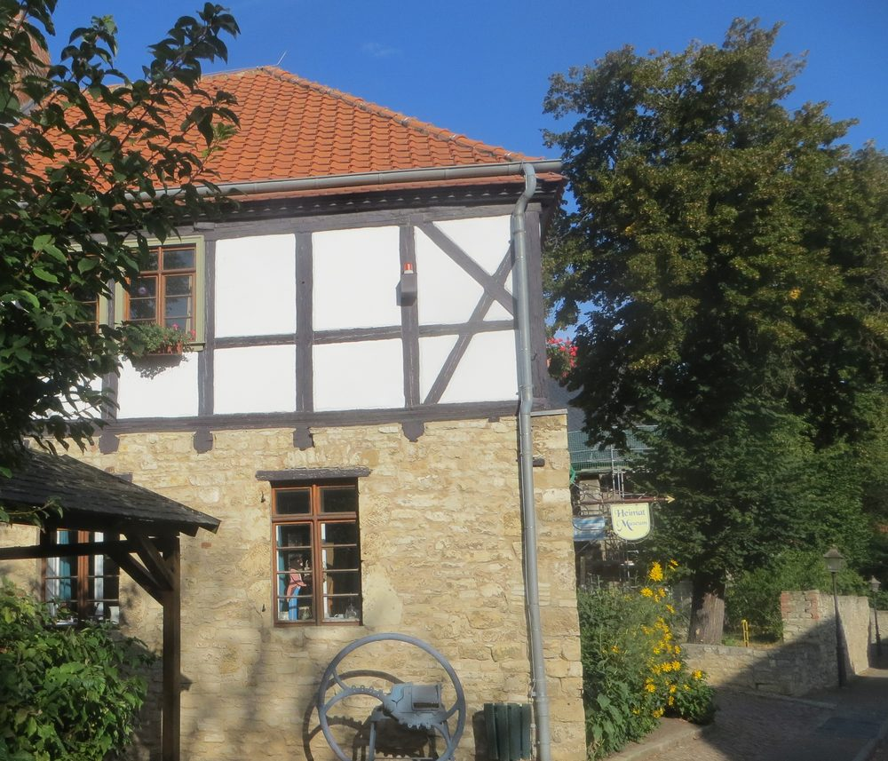
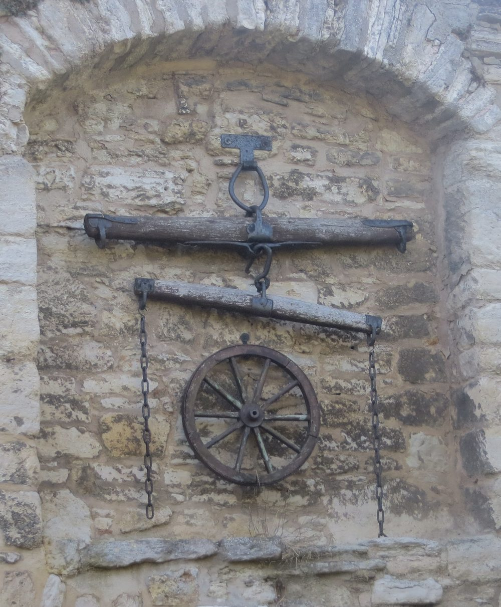

1689
Die Fahne der Kroppenstedter Reiter
Eine alte Fahne der Kroppenstedter Reiter aus dem Jahr 1689. Sie wurde vom Kurfürsten gestiftet, nachdem die vorherige verschlissen war. Die Reiter gaben Kroppenstedt seinen Beinamen Reithufenstadt.

Die Sammlung
Regionalgeschichte in den Räumen einer alten Schule: Apotheke, Klassenzimmer, Wohnstube, Arbeitsgerät — und drei Stücke mit eigener Geschichte.
Rundgang
Die Ausstellung folgt dem Haus: Sie geht durch Räume, die vorher Klassenzimmer und Wohnungen waren.
Eine alte Apotheke mit ihrer Einrichtung, komplett im Museum aufgestellt.
Ein kleiner historischer Klassenraum — in einem Haus, das selbst zweimal Schule war.
Räume mit bürgerlicher Wohnkultur vergangener Jahrhunderte und vielen Gegenständen des Alltags.
Bäuerliche Arbeitsgeräte aus der Börde — Werkzeug aus der Zeit vor den Maschinen.
Die Entwicklung der Stadt und die Geschichte der Kroppenstedter Reiter.
Drei Stücke
1689
Eine alte Fahne der Kroppenstedter Reiter aus dem Jahr 1689. Sie wurde vom Kurfürsten gestiftet, nachdem die vorherige verschlissen war. Die Reiter gaben Kroppenstedt seinen Beinamen Reithufenstadt.
1659
Ein mächtiger Silberpokal, der Willkomm der Stadt. Er taucht schon in einer Reisebeschreibung von 1659 auf, und seine Geschichte steht im Sagenbuch der Brüder Grimm.

Im Museumshof steht ein Stück der alten Stadtmauer. In ihren Rundbogennischen hängt Wagengerät — draußen, bei Wind und Wetter, wie früher.
Foto: Manfred Schröter, Berga, CC BY-SA 4.0
Nebenan im Rathaus
Nicht alles, was zur Geschichte Kroppenstedts gehört, steht im Museum. Im Rathaus liegt das Stadtarchiv mit über 3 000 Akten aus 600 Jahren — im Wendelgang von 1598.
Dort sind auch die vergitterten Gefängniszellen erhalten. Zwei ihrer Insassen sind namentlich bekannt: der Orgelbaumeister Esaias Compenius und Martin Kugler, der das Freikreuz erbaute.
Führungen
Wer mehr sehen will als die Vitrinen, ruft an. Besichtigungen und Führungen sind auch außerhalb der Öffnungszeiten möglich.
Kommen
9 bis 13 Uhr. Für alles andere genügt ein Anruf — Besichtigungen und Führungen vereinbaren wir gern zu anderen Zeiten.